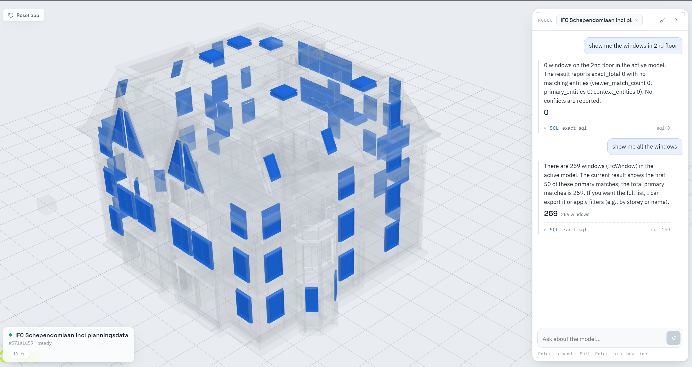
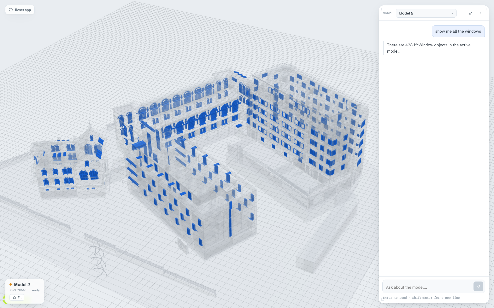
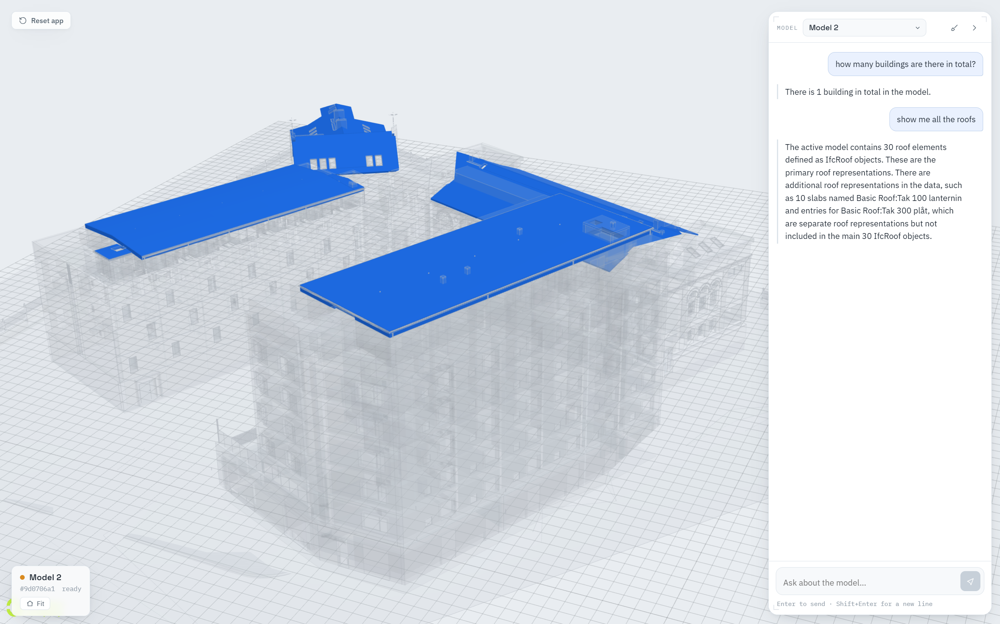
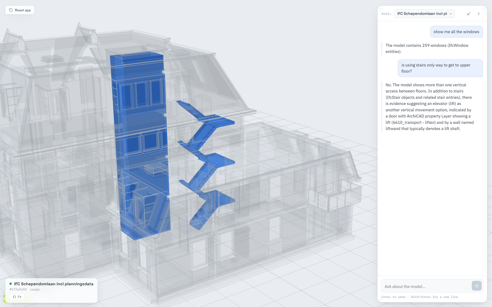
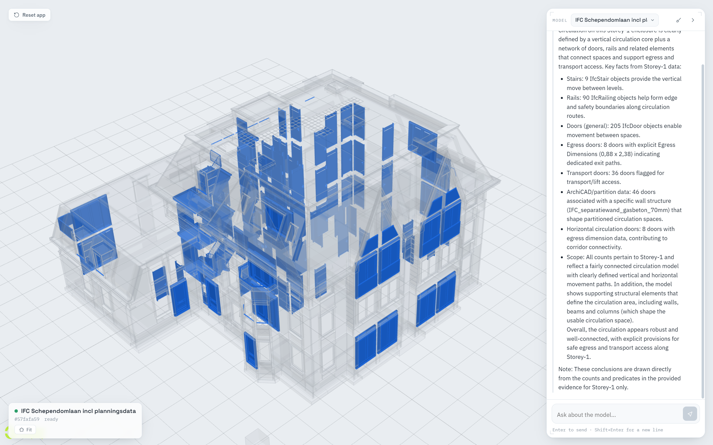
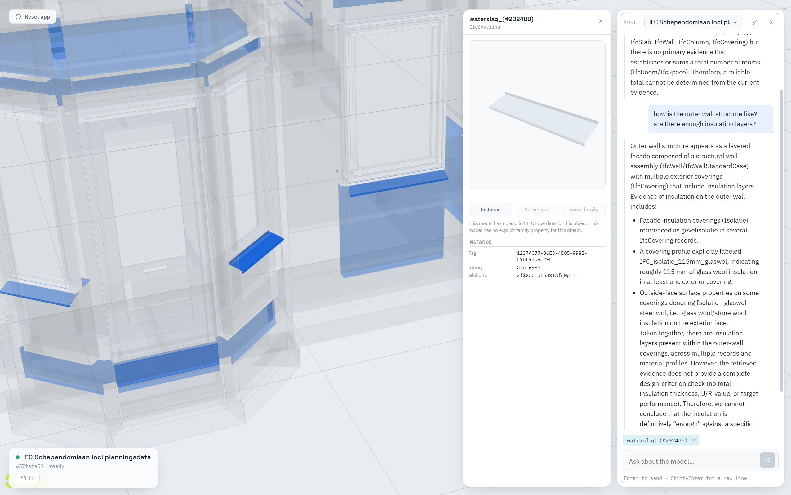

Github
Natural-language access to BIM through validated SQL, semantic retrieval, IFC graph search, and synchronized 3D results.Overview
- SQL is authoritative for exact filters, counts, grouping, and aggregation.
- RAG (retrieval-augmented generation) finds semantically related evidence when the wording of a question and the model’s own terminology do not match exactly.
- Graph search follows IFC relationships — containment, filling, voiding, aggregation, material association, and spatial membership.
- LLMs interpret the question and write the final explanation, but deterministic code stays responsible for validation and execution.
Input Data
| Model | Queryable entities | Relationships | RAG documents | Raw storeys | Spaces |
|---|---|---|---|---|---|
| Schependomlaan | 6,989 | 3,473 | 10,462 | 1 | 0 |
| FOJAB Landsarkivet | 20,975 | 19,938 | 40,913 | 45 | 778 |
| SampleArchitecture | 102,403 | 99,895 | 202,298 | 8 | 187 |
| Wellness Center | 4,705 | 3,565 | 8,270 | 5 | 0 |
- 45
IfcBuildingStoreyrows do not necessarily mean 45 occupiable floors. - Some exporters connect spaces through
IfcRelAggregates; others use containment. - A missing scalar field does not prove the relationship is absent elsewhere.
- Sparse material or property coverage cannot justify an exact statement about every eligible element.
Project Pipeline
Ingestion — run once per model
- Fingerprint the IFC A SHA-256 hash identifies the source model and makes ingestion idempotent.
- Parse entities and relationships IfcOpenShell reads objects, GlobalIds, properties, quantities, materials, relationship endpoints, and source metadata.
- Store structured facts PostgreSQL stores source models, entities, relationships, and ordered relationship members.
-
Normalize spatial membership
entity_spatial_membershipsunifies containment and aggregation paths, so floor-scoped questions do not depend on one nullable JSON field. - Build the semantic manifest (v002) One validated JSON artifact per model describes queryable concepts, operations, applicability, coverage, and access paths — a capability map, not a dump of every object.
-
Generate RAG documents and embeddings
Deterministic templates describe entities and relationships;
BAAI/bge-m3produces normalized 1,024-dimensional embeddings; pgvector stores and indexes them for cosine search. - Prepare viewer artifacts IFC geometry is converted once into That Open Fragments for fast use in the browser.
- Readiness check A model is only available for questions when its structured, semantic, vector, and viewer artifacts all match its identity.
ifc_source_models
ifc_entities
ifc_relationships
relationship_members
entity_spatial_memberships
rag_documents
model_families
source_model_catalog_entries
Query Backend — run per question
- Question inThe user question and any valid conversation or selection context enter the backend.
- Constraint ledgerA deterministic ledger records every required target, condition, value, floor, relationship, output, and viewer request.
- Parallel recommendation channelsIndependent channels run at once: exact/alias matching, IFC identifier matching, typo-tolerant matching, authoritative stored-value linking, dense BGE-M3 similarity, semantic capability compatibility, subject/access-path applicability, and optional local relationship support.
- Compact binder projectionThe binder receives a compact manifest projection, the constraint ledger, the ranked recommendations, and the question with safe inherited context.
- Typed logical planThe binder selects semantic IDs and operations and produces a typed logical plan. It does not write SQL.
- Ten-layer validation gateDeterministic checks: structure, manifest identity, supported use/operator, subject applicability, ledger coverage, units and values, traversal legality, dry compilation, coverage proof, and result/viewer shape.
- One focused correction (only if recoverable)A recoverable mechanical binding gap may trigger a single focused correction. Genuine ambiguity or absent data does not.
- Compile to physical workThe validated plan compiles to parameterized, read-only work: SQL for exact facts, SQL-scoped RAG for qualitative evidence, bounded graph traversal for relationships, and cached deterministic facts for model profiles.
- Adjudicated outcomesEach part becomes one of
exact,zero,partial,unavailable, orambiguous. - Grounded answer packetA compact packet separates exact facts, bounded semantic evidence, relationship evidence, unknowns, and provenance.
- Final answer, then re-checkedThe answer LLM writes prose only from that packet; deterministic answer validation checks the claims, and returns a direct deterministic fallback if grounding fails.
- Viewer + traceThe 3D viewer highlights identities derived from the same executed predicate as the answer, and one append-only trace records stage order, decisions, bounded evidence, latency, tokens, cost, answer, and viewer set.
Full information flow
Swipe to explore the full pipeline · SQL, RAG, and graph paths are labeled, not color-only.
Text summary of the diagram
Region 1 — ingestion. Original IFC files are read by the IfcOpenShell parser, which writes PostgreSQL BIM facts and prepares viewer fragments. PostgreSQL feeds the relationship / spatial-membership tables, the templated RAG documents (embedded by BGE-M3 into pgvector), the semantic manifest, and — later — SQL execution, stored-value linking, and graph traversal. The manifest produces the semantic access contract.
Region 2 — binding and validation. A user query and conversation/selection context build a constraint ledger and drive parallel recommendation channels. The ledger, the channels, and a compact binder projection converge at the LLM binder (Call 1), which emits a typed logical plan. A validation gate either passes the plan to the compiler, routes a correctable gap through one optional correction LLM call and back to the plan, or returns an unavailable / clarification response toward the answer packet.
Region 3 — execution, answer, and viewer. The predicate compiler branches into SQL execution, scoped RAG retrieval, and bounded IFC graph traversal, which merge into operation-specific results. Results feed both the grounded answer packet and the 3D viewer highlights using the same predicate. The packet feeds the final LLM (Call 2), then answer validation / fallback, then the user answer.
LLM Usage and Models
| Role | Model | Reasoning | Responsibility & hard limits |
|---|---|---|---|
| Call 1 — semantic binder | gpt-5.4-nano |
medium | Maps natural language and ledger requirements to semantic IDs and a typed logical query plan. It cannot write raw SQL, invent schema paths, or decide that similarity proves an exact fact. |
| Optional corrective binder call | gpt-5.4-nano |
high | Used only for a proven, recoverable binding gap. It receives focused failures and candidates, not the full duplicated universe. At most one correction is allowed. |
| Call 2 — grounded answer writer | gpt-5.4-mini |
low | Receives the compact adjudicated answer packet — not the full manifest, raw database, raw SQL, graph dumps, or viewer ID list — and turns validated evidence into readable prose. A deterministic validator rejects unsupported counts, claims, terminology, or citations and can replace the text with a factual fallback. |
| Embedding model (not a generative call) | BAAI/bge-m3 |
— | A local model that creates normalized 1,024-dimensional vectors for stored RAG documents and query/concept text. It supports semantic and multilingual recall, but similarity is treated as a candidate signal, never as proof. |
Pipeline Evolution and Benchmark
Assessed verdicts
Benchmark metrics
| Metric | v1 | v2 | v3 | v4 |
|---|---|---|---|---|
| Benchmark cases | 42 | 42 | 42 | 42 |
| Human verdicts | 14 PASS / 7 PARTIAL / 21 FAIL | 21 PASS / 3 PARTIAL / 18 FAIL | 31 PASS / 4 PARTIAL / 7 FAIL | 20 PASS / 7 PARTIAL / 15 FAIL |
| Verdict ratio | 33.3% / 16.7% / 50.0% | 50.0% / 7.1% / 42.9% | 73.8% / 9.5% / 16.7% | 47.6% / 16.7% / 35.7% |
| Route / terminal outcomes | 16 hybrid / 14 clarify / 1 SQL among 31 measured rows | 24 hybrid / 17 clarify / 1 error | not recorded in the same route format | 22 success / 5 clarification / 14 unavailable / 1 error |
| Mean latency | 38.1 s (n=31) | 28.6 s (n=42) | 18.6 s (n=40) | 28.3 s (n=42) |
| Median latency | 27.1 s | 27.0 s | 14.5 s | 25.2 s |
| p95 latency | 75.2 s | 48.3 s | 44.5 s | 60.3 s |
| Mean LLM calls | not recorded | 1.55 | 1.76 | 2.00 |
| Mean prompt tokens | not recorded | 4,018 | 148,911 (n=40) | 24,752 |
| Total measured LLM cost | not recorded | not recorded | $0.386126 (n=40 metric rows) | $0.292020 |
| Reported mean LLM cost | not recorded | not recorded | $0.009653 / query (n=40) | $0.007122 / query (41/42 priced) |
v3: 1 zero-call, 13 one-call, 23 two-call, 5 three-call
v4: 1 zero-call, 4 one-call, 31 two-call, 6 three-call
What v4 fixed deterministically
- Model 2 spaces on the first floor: 76 — not a false zero.
- Fire-rated walls: 720 — not all 1,981 walls.
- Floor with the most doors: floor 3 with 142 — not the global 551.
- One sample door: eligible set 551, answer/viewer set 1.
- Model 3 spaces on the first floor: 95 — resolved through aggregation membership.
- Model 4 walls on the top occupiable floor: 16.

Frontend
- a floating conversational panel, with model selection and session context;
- blue highlights on query-result geometry, with non-result geometry dimmed to keep spatial context;
- object picking and a component-detail panel;
- viewer identities derived from the same executed result used by the answer;
- the backend HTTP API only — the browser never connects directly to PostgreSQL or OpenAI.
Example Uses
Exact structured retrieval


Hybrid qualitative evidence


Object-level inspection

Technical Stack
| Source format | IFC2X3 |
| IFC parsing | Python 3.11, IfcOpenShell |
| Structured storage | PostgreSQL, SQLAlchemy, psycopg2 |
| Vector retrieval | pgvector with cosine / HNSW search |
| Embeddings | BAAI/bge-m3, Sentence Transformers, PyTorch / CUDA, 1,024 dimensions |
| Query backend | FastAPI, Pydantic, parameterized read-only SQL |
| Generative models | gpt-5.4-nano binder / correction, gpt-5.4-mini grounded answer |
| Query methods | typed SQL, scoped RAG, bounded IFC graph traversal |
| Frontend | React 18, TypeScript, Vite, Zustand |
| 3D BIM viewer | That Open Components / Fragments 3.4.6, Three.js 0.185.1, web-ifc 0.0.77 |
| Backend tests | pytest, ruff |
| Frontend tests | Vitest, Playwright, ESLint |
| Portfolio diagram | D3.js v7 |
References
-
OpenIFC Model Repository
openifcmodel.cs.auckland.ac.nz -
BIMData Research and Development — IFC files
github.com/bimdata/BIMData-Research-and-Development · curated IFC file list -
IfcOpenShell
docs.ifcopenshell.org · github.com/IfcOpenShell/IfcOpenShell -
pgvector
github.com/pgvector/pgvector -
BGE-M3
arXiv:2402.03216 · huggingface.co/BAAI/bge-m3 -
That Open Engine
engine_components · engine_fragment -
R2RML and Ontop
W3C R2RML · ontop-vkg.org/guide
BIM RAG adopts the explicit semantic-to-relational mapping principle, not an RDF / SPARQL stack. -
IRNet / SemQL
Guo et al., “Towards Complex Text-to-SQL in Cross-Domain Database with Intermediate Representation,” ACL 2019. aclanthology.org/P19-1444
Relates to schema linking, a typed intermediate representation, and deterministic SQL generation. -
DIN-SQL
Pourreza and Rafiei, “DIN-SQL: Decomposed In-Context Learning of Text-to-SQL with Self-Correction,” NeurIPS 2023. proceedings.neurips.cc
Relates to stage separation and targeted correction. -
BIRD
Li et al., “Can LLM Already Serve as A Database Interface? A BIg Bench for Large-Scale Database Grounded Text-to-SQLs,” NeurIPS 2023. proceedings.neurips.cc
Relates to database-value understanding and real / dirty data. -
KG-supplemented RAG
Zhu et al., “Knowledge Graph-Guided Retrieval Augmented Generation,” NAACL 2025. aclanthology.org/2025.naacl-long.449 · GraphRAG local search
Relates to semantic seeds followed by graph expansion and associated text. -
RAGChecker
Ru et al., “RAGChecker: A Fine-grained Framework for Diagnosing Retrieval-Augmented Generation,” 2024. arXiv:2408.08067
Relates to separately diagnosing retrieval and answer generation. -
OpenTelemetry database semantic conventions
opentelemetry.io/docs/specs/semconv/db
Informs cautious, bounded, parameterized query tracing.